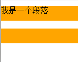
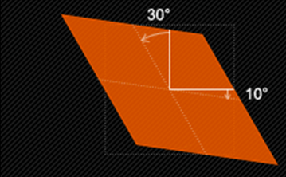
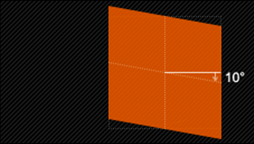
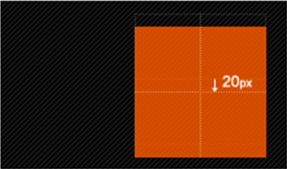

CSS3文字与字体 text-overflow 与 word-wrap
text-overflow用来设置是否使用一个省略标记（...）标示对象内文本的溢出。

text-overflow只是用来说明文字溢出时用什么方式显示，要实现溢出时产生省略号的效果，还须定义强制文本在一行内显示（white-space:nowrap）及溢出内容为隐藏（overflow:hidden），只有这样才能实现溢出文本显示省略号的效果，代码如下：
/* 设置文本单行显示，超出部分显示为‘...’ */
.oneLine-textOverflow{
text-overflow:ellipsis;
overflow:hidden;
white-space:nowrap;
}
同时，word-wrap也可以用来设置文本行为，当前行超过指定容器的边界时是否断开转行。
CSS3背景 background-origin
设置元素的起始位置 。 需要注意的是，如果背景不是no-repeat，这个属性无效，它会从边框开始显示。
background-origin: [ border-box | padding-box | content-box ]
demo：
CSS3背景 background-clip
用来将背景图片做适当的裁剪以适应实际需要。
background-clip ： [ border-box | padding-box | content-box | no-clip ]
demo：
CSS3背景 background-size
设置背景图片的大小，以 长度值 或 百分比 显示，还可以通过 cover 和 contain 来对图片进行伸缩。
background-size: [ auto | 长度值 | 百分比 | cover | contain ]
demo：
CSS3背景 multiple backgrounds
Demo:
background-image: url(http://img.mukewang.com/54cf2365000140e600740095.jpg),
url(http://img.mukewang.com/54cf238a0001728d00740095.jpg),
url(http://img.mukewang.com/54cf23b60001fd9700740096.jpg);
background-position: left top,100px 50px,200px 100px;
background-size: 50px 100px ;
background-repeat: no-repeat, no-repeat, no-repeat;
CSS3背景 制作导航菜单综合练习题

.nav {
width: 560px;
height: 50px;
font: bold 0/50px Arial;
text-align: center;
margin: 40px auto 0;
background: #f65f57;
/*制作圆*/
border-radius: 10px;
/*制作导航立体风格*/
box-shadow: 0 5px 2px #e64f47;
}
.nav a {
display: inline-block;
-webkit-transition: all 0.2s ease-in;
-moz-transition: all 0.2s ease-in;
-o-transition: all 0.2s ease-in;
-ms-transition: all 0.2s ease-in;
transition: all 0.2s ease-in;
}
.nav a:hover {
-webkit-transform: rotate(10deg);
-moz-transform: rotate(10deg);
-o-transform: rotate(10deg);
-ms-transform: rotate(10deg);
transform: rotate(10deg);
}
.nav li {
position: relative;
display: inline-block;
padding: 0 16px;
font-size: 13px;
text-shadow: 1px 2px 4px rgba(0, 0, 0, .5);
list-style: none outside none;
}
/*使用伪元素制作导航列表项分隔线*/
.nav li {
background-image: linear-gradient(to bottom, rgba(0, 0, 0, 0.1), rgba(0, 0, 0, 0.7), rgba(0, 0, 0, 0.1));
background-size: 1px 20px;
background-repeat: no-repeat;
background-position: right center;
}
.nav li:last-child {
background: none;
}
/*删除第一项和最后一项导航分隔线*/
.nav a,
.nav a:hover {
color: #fff;
text-decoration: none;
}
CSS3选择器 属性选择器
在CSS2中引入了一些属性选择器，而CSS3在CSS2的基础上对属性选择器进行了扩展，新增了3个属性选择器，使得属性选择器有了通配符的概念，这三个属性选择器与CSS2的属性选择器共同构成了CSS功能强大的属性选择器。如下表所示：

/* 属性选择器 */
a[class^='column']{
background:red;
}
a[href$='.doc']{
background:green;
}
a[title*='o']{
background:blue;
}
CSS3 结构性伪类选择器—root
:root选择器，从字面上我们就可以很清楚的理解是根选择器，他的意思就是匹配元素E所在文档的根元素。在HTML文档中，根元素始终是html
:root{
background:red; /* html文档的背景色将变为红色 */
}
CSS3 结构性伪类选择器—not
:not选择器称为否定选择器，和jQuery中的:not选择器一模一样，可以选择除某个元素之外的所有元素。就拿form元素来说，比如说你想给表单中除submit按钮之外的input元素添加红色边框，CSS代码可以写成：
form {
width: 200px;
margin: 20px auto;
}
div {
margin-bottom: 20px;
}
input:not([type="submit"]){
border:1px solid red;
}
CSS3 结构性伪类选择器—empty
:empty选择器表示的就是空。用来选择没有任何内容的元素，这里没有内容指的是一点内容都没有，哪怕是一个空格。
html样式
< p >我是一个段落 < /p >
< p > < /p>
< p >< /p>
css：
p{
background: orange;
min-height: 30px;
}
p:empty {
display: none;
}
结果：

CSS3 结构性伪类选择器—target
:target选择器称为目标选择器，用来匹配文档(页面)的url的某个标志符的目标元素。我们先来上个例子，然后再做分析。
CSS3 结构性伪类选择器 first-child / last-child
“:first-child”选择器表示的是选择父元素的第一个子元素的元素E。简单点理解就是选择元素中的第一个子元素，记住是子元素，而不是后代元素。
“:last-child”选择器与“:first-child”选择器作用类似，不同的是“:last-child”选择器选择的是元素的最后一个子元素。
CSS3 结构性伪类选择器—nth-child(n)
“:nth-child(n)”选择器用来定位某个父元素的一个或多个特定的子元素。其中“n”是其参数，而且可以是整数值(1,2,3,4)，也可以是表达式(2n+1、-n+5)和关键词(odd、even)，但参数n的起始值始终是1，而不是0。也就是说，参数n的值为0时，选择器将选择不到任何匹配的元素。
经验与技巧:当“:nth-child(n)”选择器中的n为一个表达式时，其中n是从0开始计算，当表达式的值为0或小于0的时候，不选择任何匹配的元素。如下表所示：

CSS3 nth-of-type(n)选择器
“:nth-of-type(n)”选择器和“:nth-child(n)”选择器非常类似，不同的是它只计算父元素中指定的某种类型的子元素。当某个元素中的子元素不单单是同一种类型的子元素时，使用“:nth-of-type(n)”选择器来定位于父元素中某种类型的子元素是非常方便和有用的。在“:nth-of-type(n)”选择器中的“n”和“:nth-child(n)”选择器中的“n”参数也一样，可以是具体的整数，也可以是表达式，还可以是关键词。
CSS3 last-of-type / first-of-type选择器
“:last-of-type”选择器和“:first-of-type”选择器功能是一样的，不同的是他选择是父元素下的某个类型的最后一个子元素。
CSS3 nth-last-of-type(n)选择器
“:nth-last-of-type(n)”选择器和“:nth-of-type(n)”选择器是一样的，选择父元素中指定的某种子元素类型，但它的起始方向是从最后一个子元素开始，而且它的使用方法类似于上节中介绍的“:nth-last-child(n)”选择器一样。
CSS3 only-child选择器
“:only-child”选择器选择的是父元素中只有一个子元素，而且只有唯一的一个子元素。也就是说，匹配的元素的父元素中仅有一个子元素，而且是一个唯一的子元素。
CSS3 only-of-type选择器
“:only-of-type”选择器用来选择一个元素是它的父元素的唯一一个相同类型的子元素。这样说或许不太好理解，换一种说法。“:only-of-type”是表示一个元素他有很多个子元素，而其中只有一种类型的子元素是唯一的，使用“:only-of-type”选择器就可以选中这个元素中的唯一一个类型子元素。
CSS3选择器 :enabled / :disabled选择器
在Web的表单中，有些表单元素有可用（“:enabled”）和不可用（“:disabled”）状态，比如输入框，密码框，复选框等。在默认情况之下，这些表单元素都处在可用状态。那么我们可以通过伪选择器“:enabled”对这些表单元素设置样式。
“:disabled”选择器刚好与“:enabled”选择器相反，用来选择不可用表单元素。要正常使用“:disabled”选择器，需要在表单元素的HTML中设置“disabled”属性。
CSS3选择器 ::selection选择器
“::selection”伪元素是用来匹配突出显示的文本(用鼠标选择文本时的文本)。浏览器默认情况下，用鼠标选择网页文本是以“深蓝的背景，白色的字体”显示的，效果如下图所示：
CSS3选择器 :read-only选择器
“:read-only”伪类选择器用来指定处于只读状态元素的样式。简单点理解就是，元素中设置了“readonly=’readonly’”
CSS3选择器 ::before和::after
::before和::after这两个主要用来给元素的前面或后面插入内容，这两个常和"content"配合使用，使用的场景最多的就是清除浮动。
.clearfix::before,
.clearfix::after {
content: ".";
display: block;
height: 0;
visibility: hidden;
}
.clearfix:after {clear: both;}
.clearfix {zoom: 1;}
当然可以利用他们制作出其他更好的效果，比如右侧中的阴影效果，也是通过这个来实现的。
CSS3变形--旋转 rotate()
旋转rotate()函数通过指定的角度参数使元素相对原点进行旋转。它主要在二维空间内进行操作，设置一个角度值，用来指定旋转的幅度。如果这个值为正值，元素相对原点中心顺时针旋转；如果这个值为负值，元素相对原点中心逆时针旋转。
CSS3中的变形--扭曲 skew()
扭曲skew()函数能够让元素倾斜显示。它可以将一个对象以其中心位置围绕着X轴和Y轴按照一定的角度倾斜。这与rotate()函数的旋转不同，rotate()函数只是旋转，而不会改变元素的形状。skew()函数不会旋转，而只会改变元素的形状。
Skew()具有三种情况：
1、skew(x,y)使元素在水平和垂直方向同时扭曲（X轴和Y轴同时按一定的角度值进行扭曲变形）；
第一个参数对应X轴，第二个参数对应Y轴。如果第二个参数未提供，则值为0，也就是Y轴方向上无斜切。

3、skewY(y)仅使元素在垂直方向扭曲变形（Y轴扭曲变形）
CSS3中的变形--缩放 scale()
缩放 scale()函数 让元素根据中心原点对对象进行缩放。 缩放 scale 具有三种情况：
1、 scale(X,Y)使元素水平方向和垂直方向同时缩放（也就是X轴和Y轴同时缩放）。注意：Y是一个可选参数，如果没有设置Y值，则表示X，Y两个方向的缩放倍数是一样的。

2、scaleX(x)元素仅水平方向缩放（X轴缩放）

3、scaleY(y)元素仅垂直方向缩放（Y轴缩放）

CSS3中的变形--位移 translate()
translate()函数可以将元素向指定的方向移动，类似于position中的relative。或以简单的理解为，使用translate()函数，可以把元素从原来的位置移动，而不影响在X、Y轴上的任何Web组件。
translate我们分为三种情况：
1、translate(x,y)水平方向和垂直方向同时移动（也就是X轴和Y轴同时移动）
2、translateX(x)仅水平方向移动（X轴移动）
3、translateY(Y)仅垂直方向移动（Y轴移动）
CSS3中的变形--原点 transform-origin
任何一个元素都有一个中心点，默认情况之下，其中心点是居于元素X轴和Y轴的50%处。如下图所示：
在没有重置transform-origin改变元素原点位置的情况下，CSS变形进行的旋转、位移、缩放，扭曲等操作都是以元素自己中心位置进行变形。但很多时候，我们可以通过transform-origin来对元素进行原点位置改变，使元素原点不在元素的中心位置，以达到需要的原点位置。
transform-origin取值和元素设置背景中的background-position取值类似，如下表所示：
CSS3中的动画--过渡属性 transition-property
早期在Web中要实现动画效果，都是依赖于JavaScript或Flash来完成。但在CSS3中新增加了一个新的模块transition，它可以通过一些简单的CSS事件来触发元素的外观变化，让效果显得更加细腻。简单点说，就是通过鼠标的单击、获得焦点，被点击或对元素任何改变中触发，并平滑地以动画效果改变CSS的属性值。
在CSS中创建简单的过渡效果可以从以下几个步骤来实现：
第一，在默认样式中声明元素的初始状态样式；
第二，声明过渡元素最终状态样式，比如悬浮状态；
第三，在默认样式中通过添加过渡函数，添加一些不同的样式。
CSS3的过度transition属性是一个复合属性，主要包括以下几个子属性：
transition-property:指定过渡或动态模拟的CSS属性
transition-duration:指定完成过渡所需的时间
transition-timing-function:指定过渡函数
transition-delay:指定开始出现的延迟时间
transition-property用来指定过渡动画的CSS属性名称，而这个过渡属性只有具备一个中点值的属性（需要产生动画的属性）才能具备过渡效果，其对应具有过渡的CSS属性主要有：